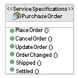

| Directriz: Gestión de estado para servicios |
 |
|
| Elementos relacionados |
|---|
IntroducciónLa noción de componentes con estado y sin estado es especialmente importante en el desarrollo de aplicaciones y sistemas distribuidos, aunque sólo recientemente ha tendido a formar parte del vocabulario común. Básicamente, la noción es que si dos componentes o servicios se comunican y hay algún estado gestionado por el componente de servidor durante la conversación con el cliente, es posible que el componente de servidor se cuelgue (o se produzca una anomalía en la red), lo que significaría que el cliente no puede finalizar la conversación y debe volver a empezar. Igualmente, realiza el redireccionamiento de solicitudes de cliente a uno de los componentes a menos que el conjunto de componentes comparta algún almacenamiento común para el estado de la conversación. Se trata de un problema bastante conocido en e desarrollo de aplicaciones web en las que su estado es gestionado minuciosamente para evitarlo siempre que sea posible y lo es por el cliente, por la propia conversación (que pasa el estado en cada mensaje) o en componentes de servidor con estado cuidadosamente diseñados. Por ejemplo, el caso común de interacción web con estado es el carro de la compra. Los usuarios esperan que el carro de la compra continúe aunque abandonen brevemente el sistema pero, ¿cómo se puede llevar esto a cabo con 100.000 usuarios al mismo tiempo? Esto no quiere decir que los componentes con estado sean inherentemente incorrectos, sólo representan un área posible de rendimiento y anomalía de elasticidad, a menos que se gestionen y desarrollen de forma más cuidadosa con estándares más rigurosos.De hecho, todas las aplicaciones empresariales contienen servicios que por su propia naturaleza gestionan o representan entidades que de forma inherente no tienen estado o contienen servicios a los que debe accederse en determinadas secuencias lógicas. De hecho, la arquitectura J2EE define beans de sesión con estado y sin estado que señalan de forma explícita estos problemas y define determinadas limitaciones en componentes con estado. Esto nos lleva a una clasificación simple de los servicios con estado, las razones por las que no podemos evitarlos en primer lugar. Un servicio puede que tenga que ser con estado por una de las siguientes razones:
Otra forma de estado que se encuentra en muchas arquitecturas de componente pero que no es aplicable en el mundo de los servicios es la noción de estado transaccional. Es posible en un mundo de componentes indicar que un método get() y update() de un componente pueda ser llamado por un cliente dentro del ámbito de una transacción creada y mantenida por el cliente. Se supone que el método update() cambia algún almacenamiento transicional subyacente. Esto casi siempre requiere la intervención de la plataforma de middleware para coordinar las transacciones y garantizar que los métodos que necesitan transacciones sean llamados por un cliente con una transacción abierta. Para los servicios, no se considera oportuno o deseable seguir un modelo en el que las transacciones, en el sentido de confirmación clásica en dos fases, se mantengan abiertas a través de un número de invocaciones de servicio. Ahora, se han desarrollado estándares para transacciones a través de invocaciones de servicio, pero siguen un paradigma (compensación) básicamente distinto y son distintamente soportados por las plataformas de middleware. La técnica más obvia, indicada con anterioridad, para un desarrollo correcto de los servicios con estado es externalizar el estado del servicio, haciendo así no sólo explícito que el servicio tiene estado sin que este estado se puede identificar como parte de la especificación de servicio. Este asunto se trata en las dos clases de servicio con estado a continuación. Como la mayoría de los servicios de software serán desarrollados encima de una plataforma de middleware existente como J2EE o Microsoft .NET, existen técnicas de implementación descritas dentro de dichas arquitecturas de plataforma para ayudar en la gestión del estado. Por eso esta directriz se centra en técnicas de diseño de determinadas clases de servicios con estado. También merece la pena observar que en ningún caso se trata de una nueva área de preocupación. En desarrollo de sistemas principales, el desarrollo de transacciones conversacionales y no conversacionales en CICS (IBM Customer Information Control System) con clientes de pantalla verde (realmente el terminal 3270) ha sido conocido y descrito por desarrolladores, diseñadores y arquitectos durante muchos años. Estado de conversación persistenteSe trata de un caso en el que el consejo más fácil es evitar la situación en el primer momento. Siempre que sea posible, si un diseño llama a la gestión de estado durante una conversación entre un servicio y sus consumidores, sería mejor intentar decidir si se puede utilizar otro enfoque. En caso contrario, se externaliza este estado pasando todos los datos de estado necesarios entre servicio y cliente, realizando cada mensaje toda la conversación. Este enfoque puede implicar que el tamaño de los mensajes aumente de forma considerable, pero el propio servicio estará ahora totalmente sin estado. Otro enfoque es llevar un identificador de conversación dentro de cada mensaje y persistir todo estado de conversación en un almacén permanente como es el caso de una base de datos. Aunque esto tenga consecuencias importantes en el rendimiento del servidor, se puede contrarrestar todo el rendimiento de red y cliente ahorrado con los mensajes más pequeños. Uno de los principales objetivos de realizar estos servicios sin estado es poder suministrar un conjunto de servicios idénticos que puedan realizar cualquier solicitud que utilice técnicas de equilibrio de carga para distribuir clientes. Este equilibrio de carga es posible si todo estado está completamente externalizado o permanece en un almacén común. Gestión de recursos con estadoEn este caso, observamos la gestión de los propios recursos que tienen estado explícito. De hecho, dicho estado es un aspecto importante del propio recurso. Puede ser que podamos describir el estado del recurso, la solicitud del cliente o el conmutador de red mencionado anteriormente con una máquina de estado, que describa no sólo los estados válidos sino también la manera en la que las operaciones suministradas por los servicios afectan al estado de los recursos subyacentes. Sea como sea el logro de esta descripción, es importante tener en cuenta que este estado es parte intrínseca del recurso. Sin embargo, puede no expresarse explícitamente en el modelo de información que lo representa. También es importante observar que allí donde gestionemos un conjunto de entidades, debemos poder identificar los recursos individuales sobre los que actuamos tengan o no tengan de nuevo un identificador explícito. Tenga en cuenta que si un servicio representa el acceso a, o una consulta del estado de una entidad física como un conmutador de red o un elemento de control de proceso, no se podrá contemplar la externalización del estado de la entidad. El estado de una válvula sólo es conocido consultando la válvula. Aunque podamos construir y responder con un mensaje que describa el estado actual de la válvula, ésta no es una situación permanente. El estado de la válvula puede cambiar durante la transmisión o el proceso de este mensaje. En el área de servicios web, hay un conjunto de estándares emergentes conocidos como Web Services Resource Framework (WSRF) que trata sobre patrones de servicios con estado y enfoques para la codificación del estado, en concreto en el caso de servicios que representan la gestión de recursos con estado. Para obtener más información, consulte el sitio de IBM WS-ResourceFramework. Especificaciones de servicio con estadoEl ejemplo mencionado anteriormente implica un servicio que tiene alguna secuenciación lógica con las operaciones que suministra. Muchos servicios proporcionarán interfaces de este tipo. En algunos casos, esto está relacionado de nuevo con recursos con estado salvo que en este caso la ordenación de las operaciones se basa en el estado del recurso gestionado. En este caso, la ordenación se basa en la propia conversación. El siguiente ejemplo muestra una especificación de servicio que tiene algún protocolo asociado, primero la especificación estructural y, a continuación, aparece una máquina de estado que describe la especificación de comportamiento.  El pedido de compra puede estar en uno de los estados {Abierto, Cancelado, Completado, Cerrado} y cambia el estado en función de las operaciones suministradas en la anterior especificación. También indicamos que en el caso de la autotransacción en el estado Abierto, ejecutamos la operación OrderChanged enviando notificaciones del cambio.
En muchos casos en los que los servicios se desarrollan dentro de un único ámbito empresarial y técnico, las especificaciones de comportamiento detalladas pueden no desarrollarse o describirse menos formalmente en texto. Allí donde los servicios se exponen fuera de dicho ámbito, por ejemplo, entre particiones, representan una especificación lógica para interacción entre particiones y debe desarrollarse con mayor detalle. Igualmente, las especificaciones detalladas permiten una reutilización más eficiente por parte de los clientes cuando se espera que los servicios se reutilicen con frecuencia. |
© Copyright IBM Corp. 1987, 2006. Reservados todos los derechos. |